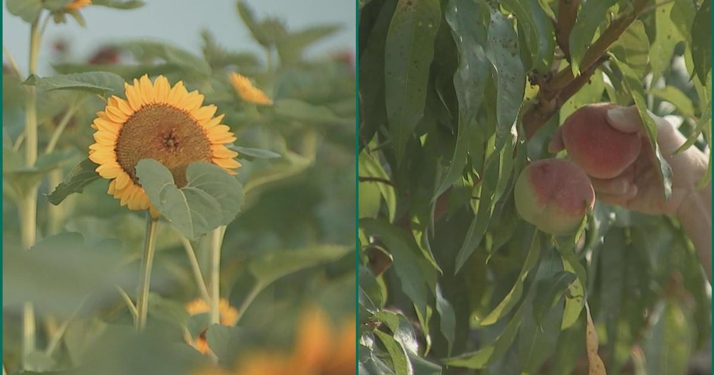

Peach and Sunflower Festival kicks off at PA's Linvilla OrchardsMEDIA, PA (CBS) -- One of the best parts of summer is here: the peaches are ready for picking and the sunflowers are blooming. Even better? At Linvilla Orchards, you get to pick your own. The annual Peach and Sunflower Festival kicks off this weekend, allowing people to pick their own fruits and flowers. Just in time for National Sunflower Day! Pick-your-own tickets include a hayride to and from the field and a container to fill with peaches and/or flowers. Linvilla's bakery and grill will also be offering some delectable treats featuring peaches. There were grilled peaches, peach cake, peach pie and loads more. Linvilla's own Farmer Norm is on the orchard's Instagram account showing you how to pick the perfect peach. On Saturday, we were able to chat with another Linvilla farmer, Stephen Griffith. "Red all the way around with a little bit of yellow on the backside. You don't want to have any green in there," Griffith said. "If it's just a little bit soft to the touch, that is just ready to eat right away. If it's a little bit firmer, it'll be ready to eat in a day or two." There was a light breeze making for great conditions for peach picking. There is also live entertainment to see and baked goods to purchase. for more features. |
 |